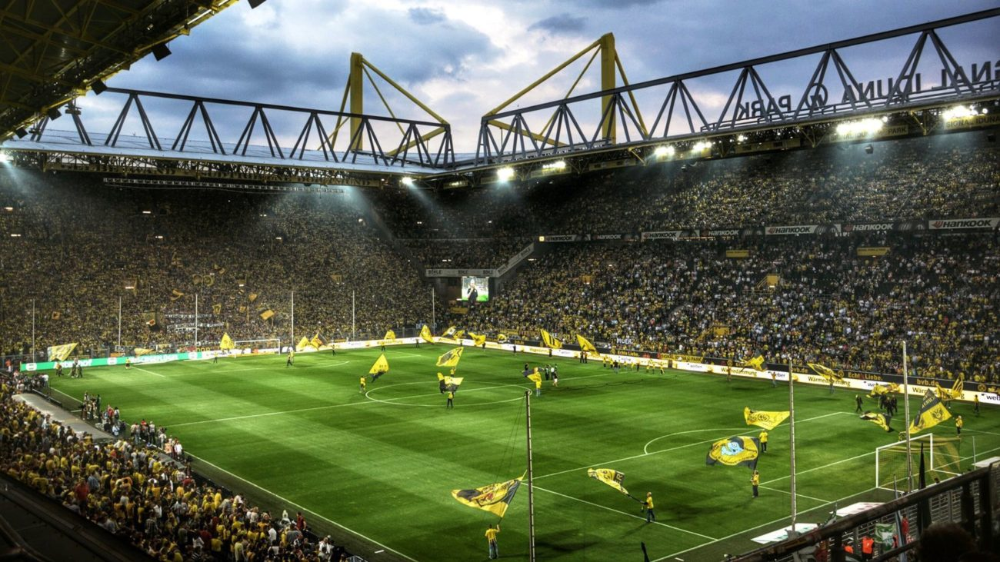

Uma fundação turbulenta em 19/12/1909
Em 1909, no nordeste de Dortmund, 40 membros da youth Catholic Holy Trinity – time patrocinado pela Igreja Católica - reuniram-se na 60 Oesterholzstrasse, em um bar com o nome de Zum Wildschutz, com a intenção de fundar o "BVB". Em parte por amor ao esporte, mas também pelo desagrado com o tratamento que recebiam do pároco local, Hubert Dewald, ao seu time de futebol.
O porta-voz e vice-presidente do novo clube, Franz Jacobi, anunciou: ”Sou membro do Trinity Youth desde 1902 e desde 1906 jogamos no ”Weissen Wiese“. Nós, jogadores de futebol, somos sistematicamente atacados e difamados por nossa igreja desde 1906. Não podemos mais tolerar isso. Este clube é absolutamente necessário.“ Padre Dewald tentou intervir pessoalmente para impedir a fundação, sem sucesso. No entanto, sua tentativa de intervenção fez com que cerca de 20 rebeldes recuassem e, portanto, apenas "18" verdadeiros Borussen participaram da fundação.
Com listras azuis e brancas com detalhes em vermelho e shorts pretos, o novo clube era fundado em protesto e buscando admissão na Federação Alemã de Futebol da Alemanha Ocidental.
O Nome
Borussia é a palavra latina para a Prússia, um antigo estado europeu que compreendia grande parte do que hoje é Alemanha, Polônia, Lituânia e Rússia. No entanto, o nome Borussia foi sugerido simplesmente porque havia uma placa Borussia-Brauerei na parede do bar Zum Wildschultz, sendo a Cervejaria Borussia situado a uma curta distância dali, na rua Steiger Strasse.
As cores
Inicialmente, o Borussia Dortmund passou a usar azul e branco, cores associadas à igreja católica, à qual pertencia a maioria de seus fundadores. Mas mesmo assim, pouco tempo depois, a camisa foi substituída por uma amarela e preta, que permanece até hoje.
A mudança foi motivada pelo fato de a equipe, representante da região do Ruhr, ter cada vez mais adeptos entre a classe trabalhadora. Assim, o amarelo serviu para homenagear os trabalhadores da siderurgia, que usavam macacões dessa cor. Já o preto representa o carvão, em homenagem aos garimpeiros da região.
Em campo
 Em campo, o clube não conseguia grandes resultados no futebol regional, porém, foi no fim da década de 1920 que a situação se agravou. Em 1929, junto a crise mundial devido à quebra da bolsa de Nova York, o clube quase foi a falência; além disso, também fizeram contratações de jogadores profissionais, o que deixou a equipe profundamente endividada. O Borussia apenas conseguiu ‘sobreviver’ através de um torcedor que cobriu a escassez financeira da equipe de seu próprio bolso.
Em campo, o clube não conseguia grandes resultados no futebol regional, porém, foi no fim da década de 1920 que a situação se agravou. Em 1929, junto a crise mundial devido à quebra da bolsa de Nova York, o clube quase foi a falência; além disso, também fizeram contratações de jogadores profissionais, o que deixou a equipe profundamente endividada. O Borussia apenas conseguiu ‘sobreviver’ através de um torcedor que cobriu a escassez financeira da equipe de seu próprio bolso.
Fazendo jus ao ditado de que “nada é tão ruim que não possa piorar” na década de 1930, quando o regime nazista tomou conta da Alemanha e, por não se juntarem ao partido de Adolf Hitler, os dirigentes do time de Dortmund foram afastados e, posteriormente, fuzilados. Foi nesse período que a rivalidade com o Schalke 04, time em grande ascensão na época, cresceu.
Em 1947, ao vencer o rival Schalke na final por 3 a 2, o Borussia conquistou seu primeiro título da Westfalia (região história da Alemanha).
Os posteriores sucessos, fizeram do time aurinegro uma das referências para o futebol nacional. Em 1954, na Suíça, teve seu primeiro jogador -o goleiro Heinrich Kwiatkowski- disputando uma final de Copa do Mundo, no qual a Alemanha foi a grande campeã.
Em 1956 e 1957, o clube conquistou seus primeiros títulos nacionais. A chamada Oberliga West, era a primeira divisão do futebol alemão na época e durou até 1963, sendo o Borussia Dortmund seu último campeão. A partir daí, foi criada a Bundesliga.
Dois anos depois, em 1965, o Dortmund venceu sua primeira DFB-Pokal (Copa da Alemanha). E, em 1966, venceu o Liverpool na final da Recopa Europeia por 2 a 1, se tornando o primeiro clube alemão a conquistar um torneio continental.
Na década de 70′, o clube entrou numa fase ruim. Em 1972, o Dortmund foi rebaixado na Bundesliga, só voltando em 1976. Em contrapartida, a construção do Westfalenstadion, atualmente Signal Iduna Park, foi concluída em 1974. A icônica Muralha Amarela, o terraço sul do estádio, é o maior da Europa e abriga indiscutivelmente a seção mais apaixonada e dedicada de fãs de futebol do planeta.
A década seguinte também foi complicada para o clube, com riscos até mesmo de não poder disputar a segunda divisão. Mesmo assim, o clube voltaria, em 1989, a conquistar um título. Foi a Copa da Alemanha, após vencer o Werder Bremen. Este foi o segundo título da Copa da Alemanha e aquele que quebrou um jejum de 23 anos sem títulos.
Era de Ouro
Após duas décadas complicadas, o Dortmund vive a melhor fase de sua história, nos anos 90′. Em 1995, o clube volta a conquistar o Campeonato Alemão (o primeiro desde que o torneio começa a ser chamado de Bundesliga). No ano seguinte, nova conquista nacional.
Em 1997, o clube conquista seu título mais importante. O time chega a final da UEFA Champions League e vence a Juventus, por 3 a 1, em Munique. No mesmo ano, o time vai à Tóquio para a disputa do Mundial Interclubes, e vence o Cruzeiro, por 2 a 0.
A equipe campeã em 1997, cedeu alguns jogadores para seleção nacional, que disputou e venceu a Euro 1996. Mas, as glórias alcançadas não se repetiram dali em diante. Em 2000, a equipe lutou para não ser rebaixada no Alemão. Em 2002, a equipe dá novas alegrias à seus torcedores, com a conquista do Campeonato Alemão daquela temporada. No mesmo ano, o time foi vice-campeão da Copa da UEFA.
Em 2005, o Borussia estava novamente à beira da falência. Cortes salariais em todo o clube, um empréstimo do Bayern de Munique de 2 milhões de euros e um acordo de patrocínio para renomear o estádio (para Signal Iduna Park) fizeram com que o aurinegro sobrevivesse financeiramente, com isso, conseguiu escapar de outro susto de rebaixamento. Como era tradição, o Dortmund encontrou uma maneira de superar mais uma série de obstáculos que cercavam o clube.
O ano de 2008 marcou o início de mais um retorno à glória do time alemão, quando contratou Jurgen Klopp como técnico. As duas primeiras temporadas de Klopp (2008-09, 09-10) deram aos espectadores esperança para o futuro, a juventude e o talento da equipe contribuíram para um otimismo que levaria à temporada 2010-11.
Esse otimismo rapidamente se tornou entusiasmo, já que o Dortmund estava no topo da tabela. O BVB venceu seu quarto título da Bundesliga e o sétimo título alemão. Além disso, essa equipe foi o grupo mais jovem a vencer o título da Bundesliga.
Na temporada seguinte, o Borussia conquistou o bicampeonato, sendo seu oitavo título alemão. Além disso, venceu o Bayern na final da Copa da Alemanha por 5 a 2. Com isso, se tornou o quarto clube alemão a vencer a Bundesliga e a Copa da Alemanha no mesmo ano.
Porém, na temporada seguinte terminaram em segundo lugar, atrás do Bayern de Munique. O Dortmund teve a oportunidade de vingar o segundo lugar no campeonato, na final da Liga dos Campeões, mas seus rivais de Munique conseguiram vencer a final sobre os aurinegros por 2-1. O mandato notável de Klopp parou quando ele deixou o cargo em abril de 2015. Sem Klopp, o Dortmund teve dificuldades tanto nas competições nacionais quanto nas internacionais. Porém, em 2017, sob o comando do alemão Thomas Tuchel, o BVB venceu a Copa da Alemanha por 2 a 1 sobre o Eintracht Frankfurt.
Em maio de 2018 foi anunciada a contratação de Lucien Favre, que conquistou a Supercopa da Alemanha na temporada de 2019-20. Favre alcançou um bom desempenho em determinado momento, mas sua passagem também foi marcada por instabilidade e após ter sido goleado por 5 a 1 para o Stuttgart em casa, na Bundesliga, foi demitido e substituído pelo assistente Edin Terzic, de 38 anos, que assumiu o comando até o fim da temporada.
Terzic assumiu interinamente o time, conquistando a Copa da Alemanha em maio de 2021. Depois, retornou à função de auxiliar, quando o clube contratou Marco Rose para a função de técnico.
Contratado em 2021 vindo depois do Dortmund pagar multa rescisória ao seu antigo clube, Rose não conseguiu melhorar o time e deixou o clube após um ano. Com desempenho irregular e problemas defensivos que não foi capaz de corrigir, o time de Rose tomou mais gols que na temporada anterior e tornou a sua passagem decepcionante.
O antigo treinador interino dos aurinegros na temporada 2020/21, Edin Terzic retornou ao comando do Borussia Dortmund depois de uma temporada. O técnico campeão da DFB-Pokal da temporada 2020/21 deve continuar seu progresso como treinador no clube que o revelou para o mercado com um contrato até 2025.
Rivalidades
Borussia Dortmund vs Schalke 04: A maior rivalidade Alemã
Considerado a “Mãe de todos os dérbis”, o Revierderby (Dérbi do Vale do Ruhr) tem uma história cheia de elementos polêmicos e conta com elementos religiosos e políticos fortes.
O primeiro fator que esquentou o clima diz respeito aos grupos fundadores de ambas as equipes. Fundado em 1904, o Schalke teve um grupo de jovens protestantes como fundadores. Enquanto isso, em 1909, o Borussia foi fundado por um grupo de cristãos que estava insatisfeito com o time de padres locais.
Outro fator que acirrou a rivalidade foi a história de ambas as equipes com o nazismo. Muito forte nos seus primeiros anos, o Schalke dominava a Alemanha nos anos que antecederam a Segunda Guerra. Por ser muito popular, ele foi utilizado por Adolf Hitler para espalhar seu nacionalismo. Por conta disso, a imagem do clube ficou fortemente vinculada ao partido nazista. Tal estigma ainda perdura até os dias atuais.
Enquanto isso, o Borussia foi na contramão desse movimento. Por sempre se opôr ao partido, o Borussia sofreu durante aqueles anos com diversos dirigentes sendo fuzilados por fazerem oposição ao movimento. Recentemente, inclusive, o Borussia ridicularizou o Nazismo com um lema “futebol e nazismo simplesmente não se encaixam“. Esse lema foi lançado por conta do avanço da extrema-direita no país. A oposição política nesse período, acirrou ainda mais a rivalidade.
Algumas partidas entre ambas as equipes também ajudaram a esquentar o clima entre ambas as equipes. Em 1972, por exemplo, com uma vitória por 3 a 0 em Gelsenkirchen, o Schalke rebaixou os rivais de Dortmund para a segunda divisão. Os aurinegros passaram alguns anos na 2.Bundesliga, por conta de forte crise financeira.
Outra partida emblemática, mas dessa vez para os torcedores do Borussia, aconteceu em 2007. Na última rodada, o Borussia recebeu os rivais em Dortmund, que precisavam vencer para conquistar seu primeiro título da Bundesliga. Os donos da casa, porém, venceram por 2 a 0 e a taça acabou indo para o Stuttgart. Nesse dia, um avião sobrevoou o estádio com uma provocação aos Azuis Reais dizendo “Vocês nunca serão campeões”. Desde a fundação da Bundesliga, o Schalke não conquistou o campeonato, apesar de ter chegado muito perto em alguns anos, enquanto o Borussia venceu cinco.
A rivalidade entre ambas as equipes é tão grande que, na loja oficial do Borussia, não existe o caixa número 4, que está no nome do rival. Além disso, é proibido usar azul em Dortmund no dia do jogo.
Borussia Dortmund x Bayern Munich: O maior clássico atual da Alemanha
As constantes e disputadas partidas decisivas entre Bayern e Borussia trouxeram uma nova e grande rivalidade para a Alemanha nos tempos atuais. A decisão da UEFA Champions League foi o auge dessa rivalidade, mas as conquistas do Borussia na Bundesliga e na Copa da Alemanha acirraram essa rivalidade.
Os embates entre Pepe Guardiola no Bayern e Klopp no Borussia tamém trouxeram os holofotes para os embates entre as equipes. Mas algo que piorou a relação entre os clubes e aumentou de vez a rivalidade foi quando o Bayern contratou jogadores da espinha dorsal do elenco do Dortmund, como Hummels, Robert Lewandowski e o promissor Mario Götze por exemplo.
O Bayern ficou conhecido como um predador de mercado, onde contrata jogadores que se destacam em rivais locais para fortaleceram seu já poderoso elenco e consequentemente enfraquecer seus adversários. A ida de suas estrelas para Munich, trouxe um grande abismo entre as equipes nos anos seguintes e a rivalidade ficou muito alta dentro de campo. Mas, o grande adversário dos aurinegros segue sendo o Schakle 04, por conta de suas torcidas massivas e pela localidade das equipes.
O estádio
 Em 02/04/1974, o Westfalenstadion foi inaugurado em Dortmund
Em 02/04/1974, o Westfalenstadion foi inaugurado em Dortmund
Certamente o estádio de futebol mais bonito da Alemanha, a inauguração foi marcada com um amistoso entre BVB e Schalke 04 (0-3) para arrecadar fundos para o empobrecido BVB. O prefeito da cidade, Guenter Samtlebe, e o presidente do BVB fizeram as honras diante de uma multidão de 54.000 pessoas. Seu estilo, à época, chamou a atenção. Diferentemente da maioria dos estádios, que tinham formato oval, o Westfalenstadion era composto por quatro arquibancadas “retas” e independentes, o que inspirou novos projetos de estádios dentro e fora da Alemanha.
O estádio foi construído pensando na Copa do Mundo de 1974. Depois disso, veio a ser a casa do Borussia Dortmund. O estádio custou 32 milhões para ser construído, tendo o município contribuído com apenas seis milhões, o restante do financiamento vindo da loteria, da FA e principalmente do governo regional da Renânia do Norte-Vestfália. O projeto atraiu muitas críticas, com muitos levantando dúvidas sobre se esse dinheiro não poderia ser melhor gasto em outro lugar. O Dortmund recebeu jogos entre Escócia e Zaire, Bulgária e Holanda, Holanda contra Suécia, bem como uma semifinal (que acabou sendo Brasil x Holanda).
O primeiro gol no novo estádio foi marcado por uma jovem chamada Margarethe Schaeferhoff às 18h18 em um jogo entre TBV Mengede e VfB Waltrop. Oficialmente, o jogo não foi oficial porque a Federação Alemã (DFB) abriria oficialmente o estádio realizando um jogo internacional entre Alemanha e Hungria dentro de duas semanas.

O estádio manteve a mesma estrutura por cerca de 20 anos, mas a modernização da Bundesliga e das competições europeias passou a pressionar o Borussia Dortmund, como ocorreu com outros clubes grandes na época. No início dos anos 1990, o Borussia passou a colocar mais assentos no estádio e a reduzir a capacidade em pé. Em 1995, construiu mais um nível de arquibancadas nas áreas leste e oeste. Nos anos seguintes, fez o mesmo com as áreas norte e sul, concluídas em 1999. Com isso, o Westfalenstadion passou a ter uma capacidade de 68.600 espectadores e a maior arquibancada da Europa, com capacidade para 25 mil pessoas. A reforma foi concluída entre 2002 e 2003, com os quatro cantos fechados com arquibancadas.
Devido a problemas financeiros, em Dezembro de 2005, o Borussia Dortmund cedeu o direito do nome do estádio à companhia de seguros Signal Iduna e em 1 de dezembro de 2005, o Westfalenstadion foi renomeado no Parque Signal Iduna. Para os direitos de uso do nome do estádio Borussia Dortmund foram liberados cerca de 20 milhões de euros com ótimo sucesso esportivo. O contrato de renomeação entre o Borussia Dortmund e o grupo de seguros Signal Iduna se aplica até a temporada 2010/2011. O cenário do Dortmund é dividido sobre esta etapa, pois ele oferece, por um lado, o dispositivo de segurança financeira, mas por outro, uma quebra de tradição representa.
A agência distrital centro oeste da cidade decidiu, no início de 2006, chamar uma estrada na proximidade de estádios no Westfalenstadion. A associação classificou esta decisão como insensível em relação ao patrocinador, enquanto muitos torcedores da BVB e da Dortmund ficaram satisfeitos com o fato de o nome de tradição ter permanecido agora com a estrada.
REFERÊNCIAS:
https://mercadodofutebol.com/borussia-dortmund/conheca-a-historia-do-borussia-dortmund-um-dos-maiores-times-alemaes/
https://www.bvb.de/eng/BVB/History/1909
https://futbolretro.es/por-que-el-borussia-dortmund-viste-de-amarillo-y-negro/?lang=en
https://borussiadortmund.net.br/pagina/muralha-amarela
https://www.torcedores.com/noticias/2017/03/muralha-amarela
https://www.torcedores.com/noticias/2018/12/rivalidade-borussia-schalke
https://trivela.com.br/dortmund-cerveja-carvao-e-futebol/
https://en.wikipedia.org/wiki/Oberliga_West_(1947%E2%80%9363)
https://europafootball.wordpress.com/2011/01/31/derby-do-vale-do-ruhr-a-historia/
https://futdados.com/signal-iduna-park-estadio-do-borussia-dortmund/
https://en.wikipedia.org/wiki/1964%E2%80%9365_DFB-Pokal
https://www.minhatorcida.com.br/geral/8487-conheca-a-historia-da-bundesliga-o-campeonato-alemao
https://pt.wikipedia.org/wiki/Liga_dos_Campe%C3%B5es_da_UEFA_de_1996%E2%80%9397
https://pt.wikipedia.org/wiki/Copa_Europeia/Sul-Americana_de_1997